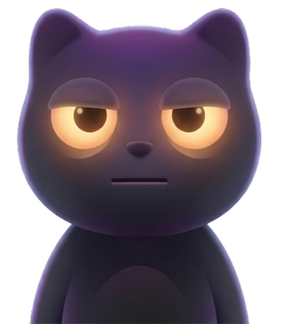
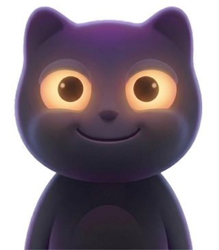
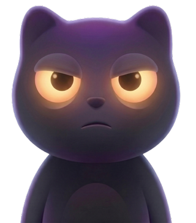
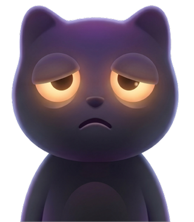
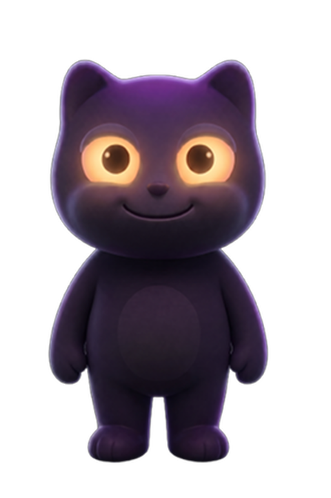
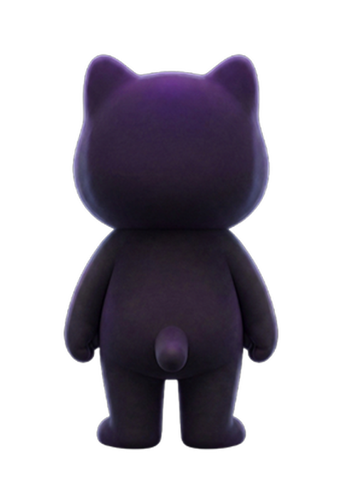
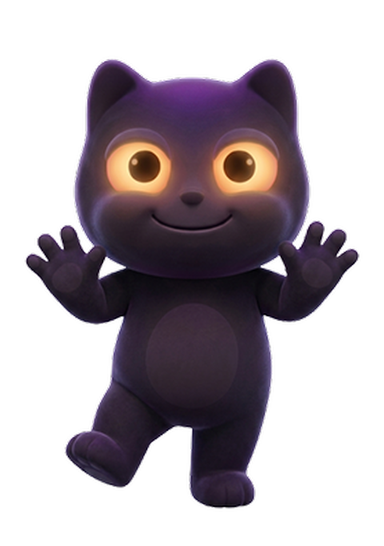
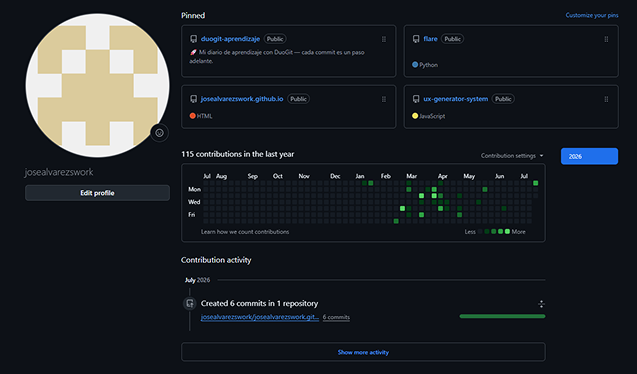

Design System
The behavioral design system behind DuoGit — color tokens, Ghost's emotional states, 60/40 zoning, league progression, and annotated UI components. Every element is wired to a psychological mechanism.
Dark-first palette that respects developer visual habits. Each color encodes a behavioral state — streaks, progress, and risk.
Accent — Ghost
--accent
#9B8FD4
Streak — Active
--accent-green
#10b981
Warning — At Risk
--accent-warn
#fbbf24
Background
--bg
#1E1A2E
Card Surface
--bg-card
#2D2845
Text Primary
--text
#F2EFE8
Ghost reacts to commit activity in real time. Each state maps to a psychological moment in the developer's consistency journey.

Neutral — Ready
Trigger: app open, no commits today
Day begins. Ghost is calm and expectant — no pressure, pure potential.
Neutral state
Happy — On Streak
Trigger: 3+ day streak / commits today
Positive reinforcement. Ghost celebrates — glowing eyes, energetic posture. The system rewards consistency, not just volume.
Core Drive 2: Accomplishment
Worried — Streak at Risk
Trigger: no commit by evening / streak about to break
Loss aversion activated. Ghost's distress makes the risk visible — empathetic urgency, not punishment.
Core Drive 8: Loss Aversion
Sad — Streak Broken
Trigger: missed day, streak resets
Emotional cost acknowledged — then resilience. Ghost mourns with the developer, then invites a guilt-free restart.
Guilt-free restartSame discipline as Cuak: front, back and gesture range locked before drafting expressions. Ghost's proportions had to hold up from every angle a widget or app screen might crop it to.

Front — neutral

Back view

Gesture range
Social influence and status identity (Core Drive 5). The league system gives developers a place to belong — and a reason to keep their streak.
Bronze
0 — 499 XP
Silver
500 — 1,499 XP
Gold
1,500 — 3,999 XP
Diamond
4,000 — 9,999 XP
Legend
10,000+ XP
XP sources: Daily commit (+10 XP), streak milestone (+25 XP), 7-day streak (+50 XP), first commit of day (+5 XP bonus). XP decay on missed days activates loss aversion without permanent punishment.
Every surface splits 60% commit data / 40% Ghost emotional state. Each zone is mapped to an Octalysis Core Drive.
Small 2×2
Progress Focus
Current streak count + Ghost emotional state. Day-to-day habit engine.
→ Core Drive 2: Accomplishment
Small 2×2
Status Focus
League rank + XP meter. Social identity — who you are in the developer community.
→ Core Drive 5: Social Influence
Wide 4×2 — Risk
Urgency Surface
Time until streak breaks + Worried Ghost. Most powerful retention surface — visible on home screen without opening the app.
→ Core Drive 8: Loss & Avoidance
Same commit data. Completely different emotional experience. DuoGit doesn't change what you did — it changes how it feels.

Real activity, zero framing. The graph doesn't say whether this pace is good, whether a streak is at risk, or how it should make you feel — just squares and a count.
Same underlying data — streak framing, Ghost's emotional state, SPACE metrics. Absence feels recoverable, not shameful.
Strategic annotations connecting UI decisions to behavioral mechanisms.
Dashboard (left) covers 1–3 below. League (right) covers 4 — rank lives on its own screen, not stapled onto the home dashboard.
Ghost mascot proxy
Ghost externalizes the developer's relationship with their code activity. Cold commit data becomes a social bond — users feel responsible to Ghost, not just to a number. (Epley & Waytz — Anthropomorphism)
Streak counter — 60% zone
Streak count is the primary behavioral signal. Positioned dominant in the 60% data zone — users see their progress before Ghost's state. Streak = evidence of consistency, not judgment of absence.
Ghost emotional state — 40% zone
Ghost's expression shifts with streak health. Happy = sustain, Worried = act now, Sad = come back. Visceral-level feedback (Don Norman) — no reading required. 40% visual weight keeps it supportive, not dominant.
League standing — own screen
A full leaderboard, not a badge stapled to the dashboard. "You" is highlighted among peers by seniority tier — social identity anchor, Core Drive 5. It's opt-in: developers navigate here, it isn't pushed at them.
Streak Counter
Day streak 🔥
Ghost is happy
Primary retention mechanism. Streak count + Ghost state + fire emoji = social proof of consistency. Resets with emotional recovery message, not harsh punishment.
XP Progress Bar
Determinate progress toward next league. Near-completion state (97%) activates the Endowed Progress Effect — users close to a goal are more motivated to complete it.
Urgency Countdown Widget
⚠ Streak at risk
4h 23m
Ghost is getting worried
Home screen widget. Passive loss aversion — visible without opening the app. The most powerful retention touchpoint in the system.
SPACE Metric Cards
Satisfaction
87%
Activity
14d
SPACE framework metrics (Satisfaction, Performance, Activity, Communication, Efficiency) — translates GitHub data into developer wellbeing signals, not just productivity numbers.
Your streak
is still alive.
14 day streak 🔥
Ghost is on your side. Every commit counts — even tiny ones. Missing a day doesn't erase your progress, it just gives Ghost something to worry about.
Gold League · Updated just now